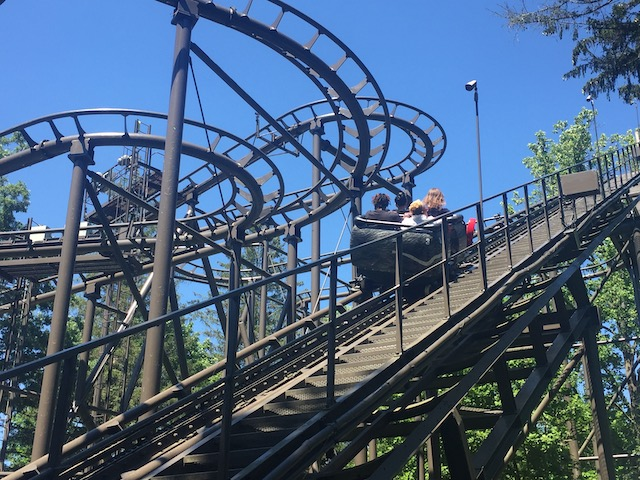
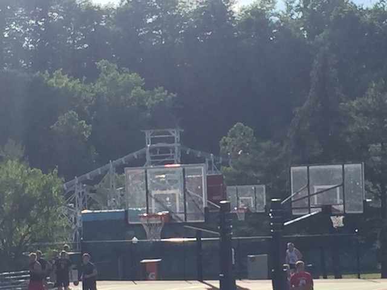
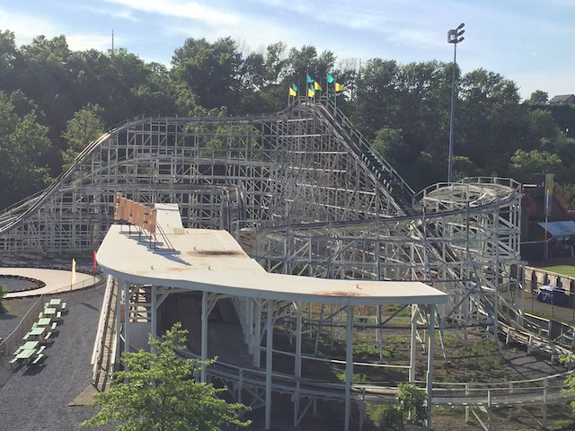
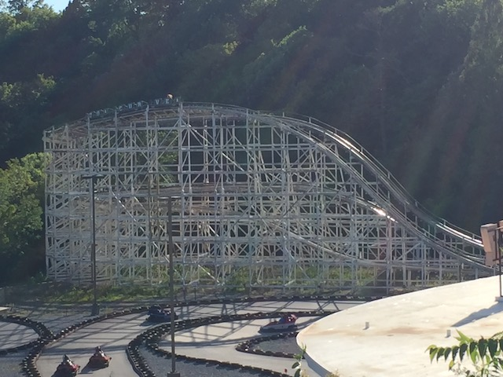
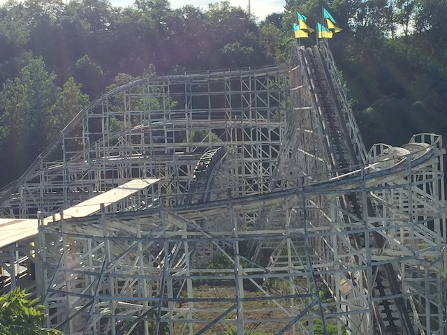
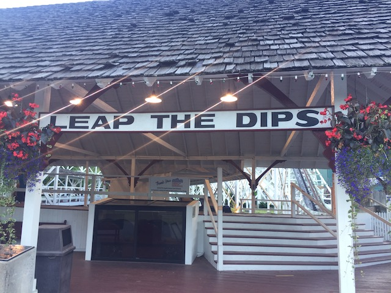
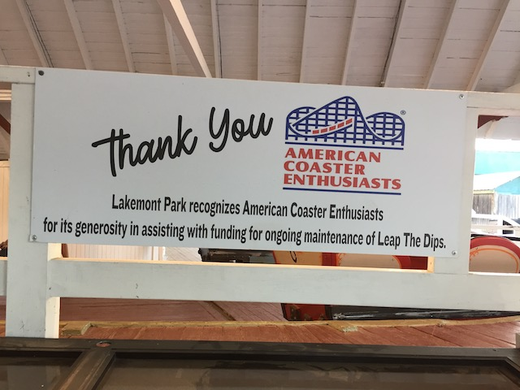
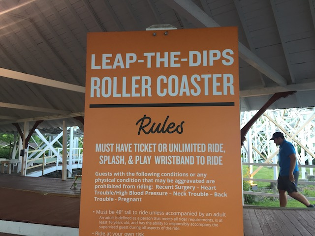

| |
East Coast Trip 2021
Lake Compounce Six Flags New England New York City American Dream Coney Island Six Flags Great Adventure
Casino Pier & Playland's Castaway Cove Dorney Park Cedar Point Kings Island Columbus Zoo & Waldameer Kennywood
Idlewild & Lakemont Park Hersheypark Knoebels
 All right. We had some fun at Kennywood. But now it's time to move onto some new parks for today. Oh, and do tell me random car. What are we #SavingOurChildren from?
All right. We had some fun at Kennywood. But now it's time to move onto some new parks for today. Oh, and do tell me random car. What are we #SavingOurChildren from?
We had to stop at Arbys for lunch since....Steve was really craving it, and....they don't have them in downtown L.A? I can't say for sure about downtown L.A, but I know where I used to live in Ventura, they had an Arbys for a while (It's been since demolished after I left, but at the time of this trip, they had an Arbys). And my new home in Long Beach has Arbys. Not sure where the Arbys is rare claim is coming from since....I've never had a problem finding them in SoCal. But meh. It's on the lower end of the fast food tier, but not as bad as everyone claims.
 Ooh. Driving through the woods. Wonder where we're going that's this deep into the woods?
Ooh. Driving through the woods. Wonder where we're going that's this deep into the woods?
Yep. Time to hit one of the few new parks of the trip and do some credit whoring at Idlewild.
Thank you Palace Season Passes for getting us in for free and making this worthwhile on our trip.
Here's a map showing off all there is for us to do at Idlewild.
This place has a.....not only does it have an RCT vibe, but it feels like Forest Frontiers. Not my version of Forest Frontiers (There'd have to be a Schwarzkoph Shuttle Loop here for it to even have a chance at being a scenario I'd do), but....just the vibe of the place, plus the ride selection seems....very RCTish.
 OK. That's enough. Time to start the credit whoring.
OK. That's enough. Time to start the credit whoring.
 Well, in some good news, this isn't just a standard Wild Mouse from Mack or Maurer Sohne just for the credit. It's actually the only Vekoma Wild Mouse in the world. So....hooray for novelty points at the very least.
Well, in some good news, this isn't just a standard Wild Mouse from Mack or Maurer Sohne just for the credit. It's actually the only Vekoma Wild Mouse in the world. So....hooray for novelty points at the very least.

Sadly, the cars themselves aren't banked on the lifthill. It's just the track that's banked. So that's a bummer. But it's still visually cool and makes the ride stand out.
 And in some good news, not only is this ride rare, but it's actually a lot of fun as well.
And in some good news, not only is this ride rare, but it's actually a lot of fun as well.
 It stands out in comparison to all the other Wild Mice as it's one of the few to not have the Standard Wild Mouse layout (or the standard Jungle Mouse layout that's common across Asia, and is really crappy. Sorry Hamanako Pal Pal), while still feeling like a Wild Mouse coaster.
It stands out in comparison to all the other Wild Mice as it's one of the few to not have the Standard Wild Mouse layout (or the standard Jungle Mouse layout that's common across Asia, and is really crappy. Sorry Hamanako Pal Pal), while still feeling like a Wild Mouse coaster.
 I know I don't really rank Wild Mice since....at the end of the day, they're pretty low on the coaster totem pole. But in all honesty, this is my 2nd favorite Wild Mouse, just behind Wild Chipmunk.
I know I don't really rank Wild Mice since....at the end of the day, they're pretty low on the coaster totem pole. But in all honesty, this is my 2nd favorite Wild Mouse, just behind Wild Chipmunk.
 Not only is it really brutal around those turns, but it's also BRUTAL in its stops. Seriously, this thing decelerates QUICKLY!!! They're not kidding when they tell you to brace.
Not only is it really brutal around those turns, but it's also BRUTAL in its stops. Seriously, this thing decelerates QUICKLY!!! They're not kidding when they tell you to brace.
So tell me guys. Did you enjoy that more than your average Wild Mouse?
OK. Time to get the other credit here.
IT'S CLOSED!!? GAH!!!
 Well, at least it appears to be something you ride just for the credit. I know it was unique. But it still looked like just a kiddy woody.
Well, at least it appears to be something you ride just for the credit. I know it was unique. But it still looked like just a kiddy woody.
 If I had to choose betweem this being closed or the Wild Mouse, I'd rather have this be closed (I guess I'm gonna come back here another day).
If I had to choose betweem this being closed or the Wild Mouse, I'd rather have this be closed (I guess I'm gonna come back here another day).
I'm assuming that this is a play area for the SoakZone water park. But I do admit to really liking the name and logo.
 Hmm. Don't see any raccoons here. You sure they named this right?
Hmm. Don't see any raccoons here. You sure they named this right?
Geese are assholes and don't deserve food from you. Feed the ducks instead. Ducks aren't assholes.
Crossing the bridge into the backside of the park (Don't think there's anything for us back here).
Crossing the Loyalhanna Creek (I love Google Maps).
"No! Please don't call the exterminator on me! I'm the mascot! I'm even selling gifts! I have a name! Stop please!"
Hey kids! They found dinosaurs down at Idlewild!
Remember boys and girls. When you're old enough to drive, get your gas from us. Ignore that whole BP Oil Spill that f*cked up the Gulf (To be fair to them, ALL the oil companies are evil. BP is not special in that regard).
They replaced the Mr. Rogers Neighborhood ride with Daniel Tiger? LAME!!!
I know it's just a kids ride based on a kids TV show, but....I respected Mr. Rogers. His show respected kids and wasn't afraid to discuss serious themes (HIGHLY recommend watching the documentary "Won't You Be My Neighbor". Big thumbs up). Instead, they replaced with a spin-off show that appears to be just a standard crappy preschool show. Totally understand the reasoning for this since....new show that is actually popular with preschoolers today, but still annoying. Whatever. Moving on.
Hello random flat ride I didn't ride.
Hmm. What should I get a coaster shirt of? Ooh! Rollo Coaster at Idlewild! Because if there's any park I want to promote on a T-Shirt, it's Idlewild! =P
I'm sure this is a fun log ride and all, but I am NOT in the mood to get wet.
GET THE F*CK OUT OF THE WAY KIDS!!! WE'RE TAKING OVER THE PLAYGROUND!!! >=)
There's nothing of real importance of these flowers. I just think they look nice.
So another big part of Idlewild is....their Storybook Forest. It's nothing special. But hey. We're here. Might as well check it out.
Cool, but it's not as amusing as laughing at the creepy demented fairy tales they showed at Magic Forest (The credit is now gone BTW. Can't say I'm surprised about that).
Idlewild as a whole is a park that.....it's a really good childrens park. I'm just gonna leave it at that.
You sure this isn't just a Mini Golf course?
No Scott! You can't go in there! You have to drink the magic potion first!
I'm pretty sure that Duke (the Palace Parks Dragon Mascot) is guarding the tower where the princess is trapped.
The menace is real guys.
 "Thank you for defeating Duke, Kevin! But our princess is in another theme park!"
"Thank you for defeating Duke, Kevin! But our princess is in another theme park!"
Speaking of another theme park, that's where we're off to. The credit whoring continues.
Ooh! Really like the cheap parking at Lakemont Park. Happy to hear that they're not jacking up the prices because of the baseball stadium.
Oh yeah. This place is right by the baseball stadium where the Altoona Curve (What sort of name is that?) plays.
Psst! Hey poor baseball fans! Just come to the parking lot and you could see the game for only $3!
 Lakemont Park is a place that I didn't really think much about, but I had a total blast here.
Lakemont Park is a place that I didn't really think much about, but I had a total blast here.
There aren't exactly a ton of rides here. It's almost like a city park with a small number of rides. Out of all the parks in America, this honestly feels like the closest to the Japanese theme parks.
It definately has the vibes of a Golf'N'Stuff (Family Entertainment Center) with the Mini-Golf that they have.

See look. Grass and basketballs like a normal park. And then there's just a roller coaster in the background (Replace that with a huge coaster and it's my childhood fantasy lol).
Guys, please decide in advance on whether we're doing tickets or a wristband and not change your mind at the last minute. Not happy I bought some tickets that immedietly became worthless after everyone changed their mind RIGHT after I bought them since....I was the first. >=(
Duh. Is that a credit?
As far as I'm concerned, this ride doesn't exist.
But hey. We got the wristband. Might as well do the go-karts while we're here.
Just like out on the real roads, people don't know how to drive. =P
Bet you wish you were here Jason.
 And with that said, time for our first coaster at Lakemont Park.
And with that said, time for our first coaster at Lakemont Park.
 This may not be the noteworthy and historical coaster, but it is the bigger coaster, and I presume the star attraction of the park.
This may not be the noteworthy and historical coaster, but it is the bigger coaster, and I presume the star attraction of the park.

Fun fact, the coaster is located RIGHT next to the baseball stadium. And so the cars read "GO CURVES" (I still can't get over how bad that name is. Worst Non-Racist Sports Team Name) to cheer the team on every time the ride runs.

Just a quick heads up, THIS RIDE IS F*CKING BRUTAL!!!

No really. This thing feels like its full of potholes and is unquestionably rough as hell. I still had fun on it, but I TOTALLY understand anyone else hating it for its agressive roughness.
 OK. Time for the other coaster in the park. It's Leap the Dips time.
OK. Time for the other coaster in the park. It's Leap the Dips time.

So not only is this another credit to get, but it's a real novelty credit as the oldest coaster in the world and the only Side-Friction coaster left that used to be really popular in the 1890s and 1900s.
 And yeah. This isn't just an ACE Classic Coaster by coaster enthusiast nerds. It's a legit National Historic Landmark recognized by the United States Federal Government. There's not very much I'm happy at them for, but we can put protecting Leap the Dips in the positive category.
And yeah. This isn't just an ACE Classic Coaster by coaster enthusiast nerds. It's a legit National Historic Landmark recognized by the United States Federal Government. There's not very much I'm happy at them for, but we can put protecting Leap the Dips in the positive category.

And of course, ACE played a HUGE role in maintaining this coaster. I know I tend to dismiss and laugh at the "Coaster Preservationist" enthusiasts since....they spend most of their time bitching about RMC and crying about rides like Mean Streak being torn down (Seriously? You're trying to save THAT peice of sh*t!?) and I roll my eyes at them. But when it comes to rides like the Giant Dipper @ Belmont Park and now this, I am SUPER happy that these enthusiasts stepped in, agree with them in these two cases, and saved both these rides from demolition since....they're both fun rides!

Don't be an idiot. It's that simple.
One thing that really surprised me. This ride has no restraints. I assumed there'd at least be a seatbelt. But nope. Sit down and hold on bitch. >=)
Excited to be riding not only a new coaster, but a peice of history as well. Seriously, this thing is older than the first ever movie, and is from the f*cking Teddy Roosevelt days.
 And....even better news. This isn't just a novelty credit that is exciting to ride due to it being rare and historical. No, this ride really surprised me in just how much fun I had on the ride.
And....even better news. This isn't just a novelty credit that is exciting to ride due to it being rare and historical. No, this ride really surprised me in just how much fun I had on the ride.
 It is just remarkable how much better the lack of restraints makes this ride. The airtime on this ride may be SUPER MILD, but because you're just sitting there holding on, it actually feels thrilling and fun.
It is just remarkable how much better the lack of restraints makes this ride. The airtime on this ride may be SUPER MILD, but because you're just sitting there holding on, it actually feels thrilling and fun.
 Enjoying your ride guys?
Enjoying your ride guys?
 I know most really old coasters don't feel super old. Even the Scenic Railways don't feel that old. But this, despite only being about 10 years older, just feels ANCIENT!!! And that's where so much of the fun comes in.
I know most really old coasters don't feel super old. Even the Scenic Railways don't feel that old. But this, despite only being about 10 years older, just feels ANCIENT!!! And that's where so much of the fun comes in.
Something tells me that that logo for the train also came from 1863.
Just enjoying the train that goes around Lakemont Park.
 Skyliner from the train.
Skyliner from the train.
Yes. There actually is a water park here at Lakemont Park.
Among all the other stuff we've mentioned, giant chess is also avaliable at Lakemont Park.
 Stay strong and keep running Leap the Dips. You have the endorsement from Incrediblecoasters.
Stay strong and keep running Leap the Dips. You have the endorsement from Incrediblecoasters.
With all the rides done, it's time to play some Mini-Golf.
 I know I SUCK at Mini-Golf. But....everyone else sucks equally as hard. So....THE BATTLE FOR THE LEAST BAD MINI-GOLFER BEGINS!!!
I know I SUCK at Mini-Golf. But....everyone else sucks equally as hard. So....THE BATTLE FOR THE LEAST BAD MINI-GOLFER BEGINS!!!
"This is his fourth try. Will Evan actually hit the ball this time? Or will he once again, f*ck up, swing and miss?"
WHAT!!? THE VENDING MACHINE IS DOWN!!? I wasn't planning on buying a drink from there. But come on! If Japan can have vending machines EVERYWHERE and maintain them all perfectly, then there's no excuse for this. =P
Unfortunately, we're all so bad that we couldn't even finish the game as we had to leave in order to get to our hotel at a reasonable time. I forgot who "won" (Clearly wasn't me, otherwise, I would've remembered). But considering how we couldn't even finish the game because we all took so long at the holes, I think it's safe to call this an all-way tie with ALL OF US being the losers.
 So long Lakemont Park. I only expected this to be a quick credit whore place, but I had a blast and unironically wish to come back on a future visit despite having all the credits.
So long Lakemont Park. I only expected this to be a quick credit whore place, but I had a blast and unironically wish to come back on a future visit despite having all the credits.
Hersheypark
Home
|